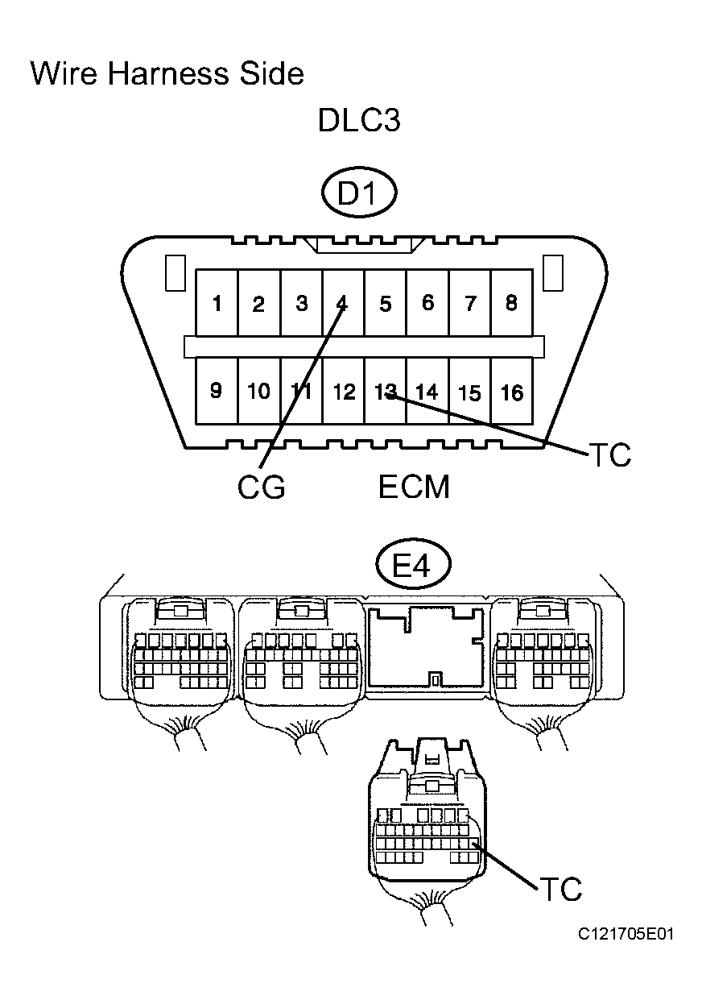

Inspection Procedure
- CHECK DLC3 (TC VOLTAGE)
- Measure the voltage of the connector.
Standard voltage
TESTER CONNECTION SPECIFIED CONDITIONTester Connection Condition Specified Condition D1-13 (TC) - D1-4 (CG) Ignition switch ON 10 to 14 V
OK: GO TO CAN COMMUNICATION
NG: Go to Next Step
- Measure the voltage of the connector.
- CHECK WIRE HARNESS (DLC3 - ECM AND BODY GROUND)
- Disconnect the D1 DLC3 connector.
- Disconnect the E4 ECM connector.
- Measure the resistance of the wire harness side connectors.
Standard resistance
TESTER CONNECTION SPECIFIED CONDITIONTester Connection Specified Condition D1-13 (TC) - E4-17 (TC) Below 1 Ω D1-4 (CG) - Body ground
NG: REPAIR OR REPLACE HARNESS AND CONNECTOR

Courtesy of © TOYOTA, LICENSE AGREEMENT TMS1002OK: GO TO CAN COMMUNICATION